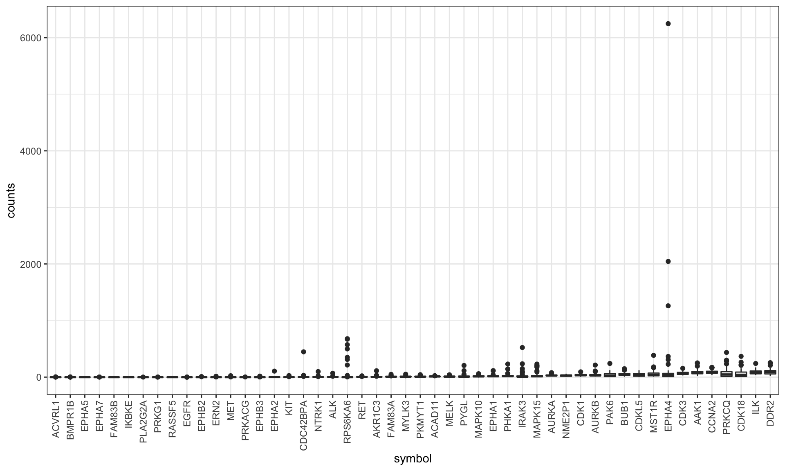
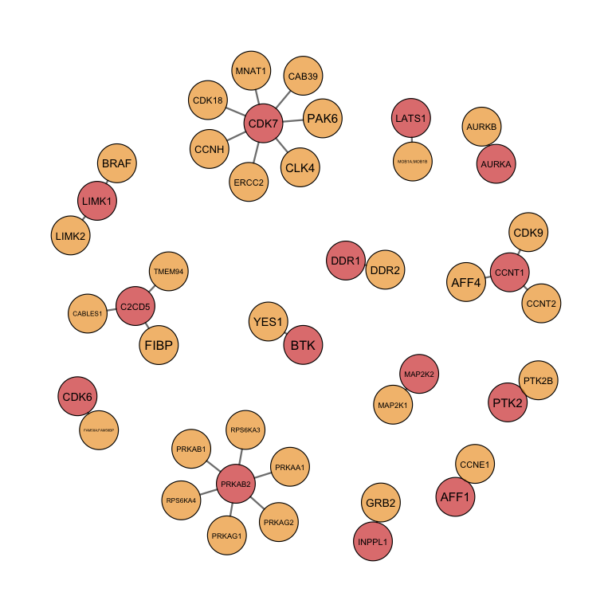
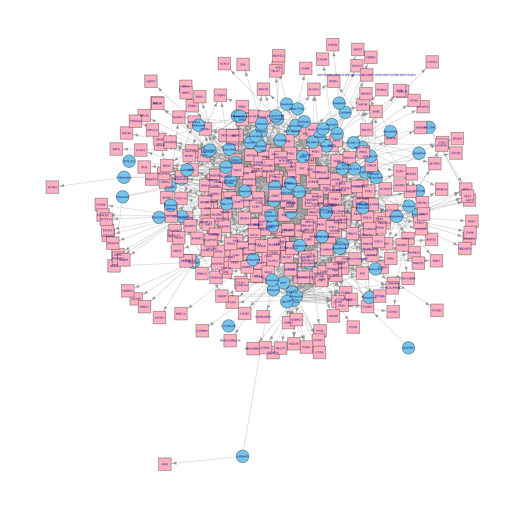

Last updated: 2021-11-05
Checks: 6 1
Knit directory: DepInfeR/analysis/
This reproducible R Markdown analysis was created with workflowr (version 1.6.2). The Checks tab describes the reproducibility checks that were applied when the results were created. The Past versions tab lists the development history.
The R Markdown is untracked by Git. To know which version of the R Markdown file created these results, you’ll want to first commit it to the Git repo. If you’re still working on the analysis, you can ignore this warning. When you’re finished, you can run wflow_publish to commit the R Markdown file and build the HTML.
Great job! The global environment was empty. Objects defined in the global environment can affect the analysis in your R Markdown file in unknown ways. For reproduciblity it’s best to always run the code in an empty environment.
The command set.seed(20211005) was run prior to running the code in the R Markdown file. Setting a seed ensures that any results that rely on randomness, e.g. subsampling or permutations, are reproducible.
Great job! Recording the operating system, R version, and package versions is critical for reproducibility.
Nice! There were no cached chunks for this analysis, so you can be confident that you successfully produced the results during this run.
Great job! Using relative paths to the files within your workflowr project makes it easier to run your code on other machines.
Great! You are using Git for version control. Tracking code development and connecting the code version to the results is critical for reproducibility.
The results in this page were generated with repository version 43be8a7. See the Past versions tab to see a history of the changes made to the R Markdown and HTML files.
Note that you need to be careful to ensure that all relevant files for the analysis have been committed to Git prior to generating the results (you can use wflow_publish or wflow_git_commit). workflowr only checks the R Markdown file, but you know if there are other scripts or data files that it depends on. Below is the status of the Git repository when the results were generated:
Ignored files:
Ignored: .DS_Store
Ignored: .Rhistory
Ignored: .Rproj.user/
Ignored: analysis/.DS_Store
Ignored: analysis/.Rhistory
Ignored: analysis/analysis_RNAseq_cache/
Ignored: data/.DS_Store
Ignored: output/.DS_Store
Untracked files:
Untracked: analysis/analysis_EMBL2016.Rmd
Untracked: analysis/analysis_GDSC.Rmd
Untracked: analysis/analysis_RNAseq.Rmd
Untracked: analysis/analysis_beatAML.Rmd
Untracked: analysis/process_EMBL2016.Rmd
Untracked: analysis/process_GDSC.Rmd
Untracked: analysis/process_beatAML.Rmd
Untracked: analysis/process_kinobeads.Rmd
Untracked: code/utils.R
Untracked: data/BeatAML/
Untracked: data/EMBL2016/
Untracked: data/GDSC/
Untracked: data/Kinobeads/
Untracked: data/RNAseq/
Untracked: manuscript/
Untracked: output/BeatAML_result.RData
Untracked: output/EMBL_result.RData
Untracked: output/EMBL_resultSub.RData
Untracked: output/GDSC_result.RData
Untracked: output/allTargets.rds
Untracked: output/inputs_BeatAML.RData
Untracked: output/inputs_EMBL.RData
Untracked: output/inputs_GDSC.RData
Unstaged changes:
Modified: README.md
Modified: _workflowr.yml
Modified: analysis/_site.yml
Deleted: analysis/about.Rmd
Modified: analysis/index.Rmd
Deleted: analysis/license.Rmd
Deleted: output/README.md
Note that any generated files, e.g. HTML, png, CSS, etc., are not included in this status report because it is ok for generated content to have uncommitted changes.
There are no past versions. Publish this analysis with wflow_publish() to start tracking its development.
This document shows the preprocessing of the EMBL2016 screening dataset to use with the target importance inference package (DepInfeR) with the kinobeads kinase inhibitor screen (Klaeger, 2017).
Packages
library(depInfeR)
library(stringdist)
library(BloodCancerMultiOmics2017)
library(DESeq2)
library(igraph)
library(tidyverse)
source("../code/utils.R")
knitr::opts_chunk$set(dev = c("png","pdf"))Load pre-processed kinobead table table
tarList <- readRDS("../output/allTargets.rds")Read in EMBL2016 raw drug screen datasets
EMBLscreen <- readxl::read_xlsx("../data/EMBL2016/EMBL2016_screen.xlsx")
#sample annotation
patMeta <- readxl::read_xlsx("../data/EMBL2016/EMBL2016_patAnnotation.xlsx")Get drug list from EMBL2016 screen
drugList <- EMBLscreen %>% dplyr::select(drugID, name, Synonyms) %>%
filter(!is.na(drugID), !duplicated(drugID)) %>% mutate(Drug = tolower(name)) %>%
mutate(Drug = gsub("[- ]","",Drug)) Find overlapped drugs by their names
overDrug <- intersect(tarList$Drug, drugList$Drug)Drugs that are not overlapped.
missDrug <- setdiff(drugList$Drug, tarList$Drug)Calculate hamming distance and consider synonyms
notFound <- setdiff(unique(tarList$Drug),overDrug)
stillNotFound <- filter(drugList, Drug %in% missDrug)
distTab <- lapply(seq(nrow(stillNotFound)), function(i) {
drug1 <- stillNotFound[i,]$Drug
synList <- strsplit(stillNotFound[i,]$Synonyms, split = ",")[[1]]
lapply(synList, function(syn) {
lapply(notFound, function(drug2) {
data.frame(drug1 = drug1, synonym = tolower(syn), drug2= drug2, dis = stringdist(tolower(syn), drug2), stringsAsFactors = FALSE)
}) %>% dplyr::bind_rows()
}) %>% dplyr::bind_rows()
}) %>% dplyr::bind_rows()
distTab <- arrange(distTab, dis)
head(distTab, n=10) drug1 synonym drug2 dis
1 roscovitine seliciclib seliciclib 0
2 flavopiridol alvocidib alvocidib 0
3 nvpaew541 aew541 aew541 0
4 azd9291 osimertinib osimertinib 0
5 afuresertib gsk2110183 gsk2110183 0
6 sns032 bms-387032 bms387032 1
7 mk8776 sch 900776 sch900776 1
8 bi6727 volasertib volasertib 1
9 roscovitine seliciclib milciclib 3
10 azd9291 osimertinib ulixertinib 3The first 8 drugs are the same drugs
Get drug mappings
drugMap <- distTab[1:8,]$drug1
names(drugMap) <- distTab[1:8,]$drug2Modify the name
tarList <- mutate(tarList, Drug = ifelse(Drug %in% names(drugMap), drugMap[Drug],Drug))Get the final overlapped drug list
finalList <- intersect(tarList$Drug, drugList$Drug)Combine the lists and match drug IDs
targets <- left_join(tarList, drugList, by = "Drug") %>%
dplyr::select(name, drugID, `Target Classification`, EC50,`Apparent Kd`, `Gene Name`) %>%
dplyr::filter(!is.na(name))How many drugs?
length(unique(targets$drugID))[1] 86Change names
colnames(targets) <- c("drugName","drugID","targetClassification","EC50","Kd","targetName","originalTarget","originalPathway")Based on published RNAseq dataset
data("dds")
dds <- dds[,dds$PatID %in% EMBLscreen$patID]
colnames(dds) <- dds$PatIDGet count values from RNAseq data
#targets that are not in RNAseq dataset
#setdiff(unique(targets$targetName), rowData(dds)$symbol)
#actually four genes have different gene names used.
symbolMap <- c(ADCK3 ="COQ8A", ZAK = "MAP3K20",
KIAA0195 = "TMEM94", ADRBK1 = "GRK2")
#correct the name
targets <- mutate(targets, targetName = ifelse(targetName %in% names(symbolMap),
symbolMap[targetName],
targetName))
highTargets <- filter(targets, targetClassification == "High confidence")
#get count data
targetCount <- dds[rowData(dds)$symbol %in% targets$targetName,]Plot the expression values
#prepare plot tab
plotTab <- data.frame(counts(targetCount, normalized = FALSE)) %>%
rownames_to_column("ID") %>%
mutate(symbol = rowData(targetCount)$symbol) %>%
gather(key = "patID", value = "counts", -symbol, -ID)
#deal with one gene, multiple transcript problem
#only keep the most aboundant transcript
transTab <- group_by(plotTab, ID, symbol) %>% summarize(total = sum(counts)) %>%
ungroup() %>%
arrange(desc(total)) %>% distinct(symbol, .keep_all = TRUE)`summarise()` has grouped output by 'ID'. You can override using the `.groups` argument.plotTab <- filter(plotTab, ID %in% transTab$ID)
#get the 80% quantile expression value
exprMed <- group_by(plotTab, symbol) %>% summarise(avgCount = quantile(counts,0.8)) %>%
arrange(avgCount) %>% top_n(-50, avgCount)
#only plot the 50 lowest expressed genes
plotTab <- filter(plotTab, symbol %in% exprMed$symbol) %>%
mutate(symbol = factor(symbol, levels = exprMed$symbol))
ggplot(plotTab, aes(x= symbol, y = counts)) + geom_boxplot() +
theme_bw() + theme(axis.text.x = element_text(angle = 90, hjust =1, vjust =.5)) 
Removed the targets that are not expressed
#80% quantile < 10
geneRemove <- filter(exprMed, rank(avgCount) / n() < 0.8)
geneRemove <- filter(exprMed,avgCount < 10)$symbol
targets <- filter(targets, !targetName %in% geneRemove)Turn target table into drug-target affinity matrix
tarMat_kd <- dplyr::filter(targets, targetClassification == "High confidence") %>%
dplyr::select(drugID, targetName, Kd) %>%
spread(key = "targetName", value = "Kd") %>%
remove_rownames() %>% column_to_rownames("drugID") %>% as.matrix()#plot network
#Only plot for finnally selected targets
load("../output/EMBL_result.RData")
CancerxTargets<- rowSums(result$freqMat)
CancerxTargets <- names(CancerxTargets[CancerxTargets>0])
#CancerxTargets <- c("MAP2K2", "MAP4K2", "BTK", "PTK6", "WEE1", "CHEK1")
plotTarGroups(ProcessTargetResults, CancerxTargets)
plotTab <- dplyr::select(targets, drugName, targetName)
nodeAttr <- gather(plotTab, key = "type", value = "name", drugName, targetName) %>%
filter(!duplicated(name)) %>%
mutate(type = ifelse(type == "targetName", "target", "drug"))
g <- graph_from_edgelist(as.matrix(plotTab))
V(g)$nodeType <- nodeAttr[match(V(g)$name, nodeAttr$name),]$type
V(g)$shape <- ifelse(V(g)$nodeType == "drug", "circle","square")
V(g)$color <- ifelse(V(g)$nodeType == "drug", "skyblue","pink")
V(g)$size = 6
V(g)$label.cex = 0.7
plot(g, layout=layout_with_kk) No obvious structure can be seen. Polypharmacology needs to be resolved.
In order to be consistent for all drugs, only the 9 lowest concentrations are regarded.
Use average of 9 concentrations
viabTab <- dplyr::filter(EMBLscreen,
concIndex %in% seq(1,9)) %>%
group_by(drugID, patID) %>%
summarise(viab = mean(normVal.sigm)) %>% ungroup() %>%
dplyr::rename(Drug = drugID, patientID = patID)`summarise()` has grouped output by 'drugID'. You can override using the `.groups` argument.viabMat <- spread(viabTab, patientID, viab) %>%
data.frame() %>%
column_to_rownames("Drug") %>% as.matrix()targetsEMBL <- targets
ProcessTargetResults_EMBL <- ProcessTargetResults
tarMat_EMBL <- ProcessTargetResults$resTarMat
viabMat_EMBL <- viabMat[rownames(tarMat_EMBL),]
annotation_EMBL <- patMeta
save(tarMat_EMBL, viabMat_EMBL, annotation_EMBL, ProcessTargetResults_EMBL, targetsEMBL, file = "../output/inputs_EMBL.RData")
sessionInfo()R version 4.0.2 (2020-06-22)
Platform: x86_64-apple-darwin17.0 (64-bit)
Running under: macOS 10.16
Matrix products: default
BLAS: /Library/Frameworks/R.framework/Versions/4.0/Resources/lib/libRblas.dylib
LAPACK: /Library/Frameworks/R.framework/Versions/4.0/Resources/lib/libRlapack.dylib
locale:
[1] en_US.UTF-8/en_US.UTF-8/en_US.UTF-8/C/en_US.UTF-8/en_US.UTF-8
attached base packages:
[1] parallel stats4 stats graphics grDevices utils datasets
[8] methods base
other attached packages:
[1] forcats_0.5.1 stringr_1.4.0
[3] dplyr_1.0.7 purrr_0.3.4
[5] readr_2.0.0 tidyr_1.1.3
[7] tibble_3.1.3 ggplot2_3.3.5
[9] tidyverse_1.3.1 igraph_1.2.6
[11] DESeq2_1.28.1 SummarizedExperiment_1.18.2
[13] DelayedArray_0.14.1 matrixStats_0.60.0
[15] Biobase_2.48.0 GenomicRanges_1.40.0
[17] GenomeInfoDb_1.24.2 IRanges_2.22.2
[19] S4Vectors_0.26.1 BiocGenerics_0.34.0
[21] BloodCancerMultiOmics2017_1.8.0 stringdist_0.9.7
[23] depInfeR_0.1.0
loaded via a namespace (and not attached):
[1] readxl_1.3.1 backports_1.2.1 Hmisc_4.5-0
[4] workflowr_1.6.2 plyr_1.8.6 splines_4.0.2
[7] BiocParallel_1.22.0 usethis_2.0.1 digest_0.6.27
[10] foreach_1.5.1 htmltools_0.5.1.1 fansi_0.5.0
[13] checkmate_2.0.0 magrittr_2.0.1 memoise_2.0.0
[16] cluster_2.1.2 doParallel_1.0.16 tzdb_0.1.2
[19] remotes_2.4.0 annotate_1.66.0 modelr_0.1.8
[22] prettyunits_1.1.1 jpeg_0.1-9 colorspace_2.0-2
[25] blob_1.2.2 rvest_1.0.1 haven_2.4.1
[28] xfun_0.24 callr_3.7.0 crayon_1.4.1
[31] RCurl_1.98-1.3 jsonlite_1.7.2 genefilter_1.70.0
[34] survival_3.2-11 iterators_1.0.13 glue_1.4.2
[37] gtable_0.3.0 zlibbioc_1.34.0 XVector_0.28.0
[40] pkgbuild_1.2.0 shape_1.4.6 abind_1.4-5
[43] scales_1.1.1 DBI_1.1.1 Rcpp_1.0.7
[46] htmlTable_2.2.1 xtable_1.8-4 tmvnsim_1.0-2
[49] foreign_0.8-81 bit_4.0.4 Formula_1.2-4
[52] ipflasso_1.1 glmnet_4.1-2 htmlwidgets_1.5.3
[55] httr_1.4.2 lavaan_0.6-9 RColorBrewer_1.1-2
[58] ellipsis_0.3.2 pkgconfig_2.0.3 XML_3.99-0.6
[61] farver_2.1.0 nnet_7.3-16 sass_0.4.0
[64] dbplyr_2.1.1 locfit_1.5-9.4 utf8_1.2.2
[67] tidyselect_1.1.1 labeling_0.4.2 rlang_0.4.11
[70] reshape2_1.4.4 later_1.2.0 AnnotationDbi_1.50.3
[73] munsell_0.5.0 cellranger_1.1.0 tools_4.0.2
[76] cachem_1.0.5 cli_3.0.1 generics_0.1.0
[79] RSQLite_2.2.7 devtools_2.4.2 broom_0.7.9
[82] fdrtool_1.2.16 evaluate_0.14 fastmap_1.1.0
[85] ggdendro_0.1.22 yaml_2.2.1 processx_3.5.2
[88] knitr_1.33 bit64_4.0.5 fs_1.5.0
[91] glasso_1.11 pbapply_1.4-3 nlme_3.1-152
[94] xml2_1.3.2 compiler_4.0.2 rstudioapi_0.13
[97] png_0.1-7 beeswarm_0.4.0 testthat_3.0.4
[100] reprex_2.0.0 geneplotter_1.66.0 pbivnorm_0.6.0
[103] bslib_0.2.5.1 stringi_1.7.3 highr_0.9
[106] ps_1.6.0 qgraph_1.6.9 desc_1.3.0
[109] lattice_0.20-44 Matrix_1.3-4 psych_2.1.6
[112] ggsci_2.9 vctrs_0.3.8 pillar_1.6.2
[115] lifecycle_1.0.0 jquerylib_0.1.4 corpcor_1.6.9
[118] data.table_1.14.0 bitops_1.0-7 httpuv_1.6.1
[121] latticeExtra_0.6-29 R6_2.5.0 promises_1.2.0.1
[124] gridExtra_2.3 sessioninfo_1.1.1 codetools_0.2-18
[127] gtools_3.9.2 MASS_7.3-54 assertthat_0.2.1
[130] pkgload_1.2.1 rprojroot_2.0.2 withr_2.4.2
[133] mnormt_2.0.2 GenomeInfoDbData_1.2.3 rlist_0.4.6.1
[136] hms_1.1.0 rpart_4.1-15 grid_4.0.2
[139] rmarkdown_2.9 git2r_0.28.0 base64enc_0.1-3
[142] lubridate_1.7.10